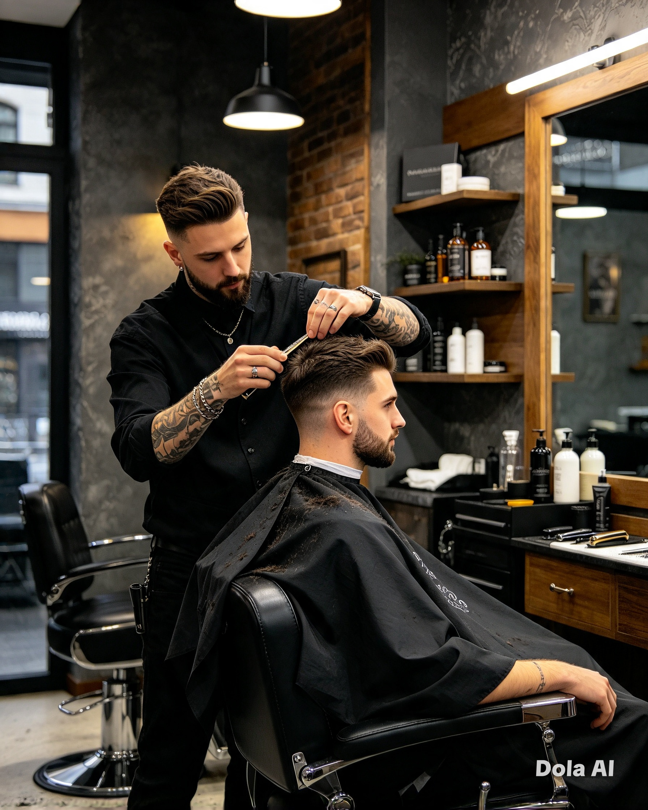
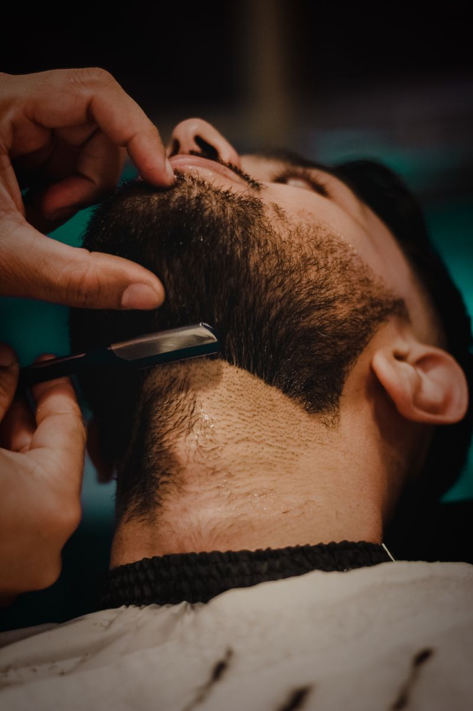
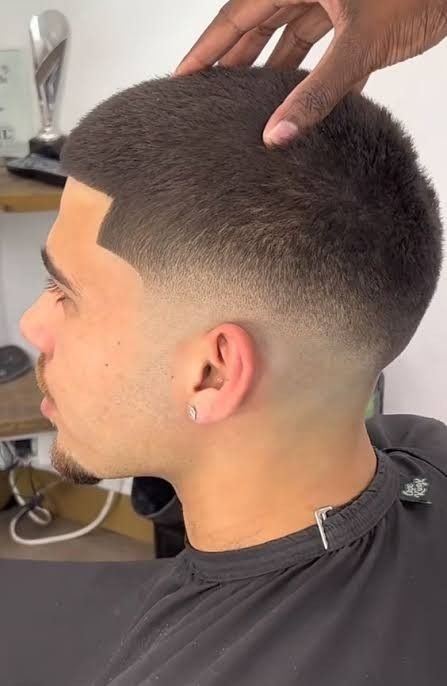
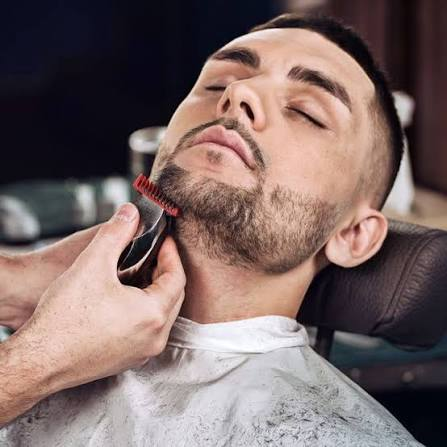
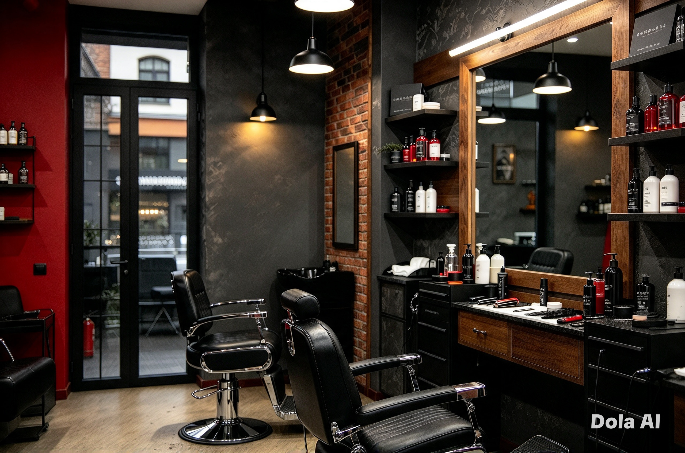

Corte clássico
$35Um corte versátil para o dia a dia, finalizado com atenção aos detalhes e à nuca.
Uma barbearia de bairro em Portland, Oregon
Um corte bem pensado, uma toalha quente e um tempo para você. Pode chegar sem marcar ou falar com a gente antes do fim de semana.
Não precisa marcar.
Nos fins de semana, recomendamos agendar.

Serviços
Sem complicação. Escolha o serviço ideal para você, venha até a barbearia e cuidamos do resto.
Um corte versátil para o dia a dia, finalizado com atenção aos detalhes e à nuca.
Degradê rente à pele, na altura que você escolher, com contornos bem definidos.

Corte renovado e barba alinhada, finalizados com toalha quente.
O favorito da Northside
Barba feita à moda tradicional, com toalhas quentes e um momento para relaxar.

Um corte prático e fácil de manter, com o comprimento e o acabamento que você escolher.
Corte na tesoura que preserva o comprimento e devolve forma e movimento.

Para aparar ou renovar o formato, com um acabamento que combina com seu rosto e estilo.
Preços em dólares americanos. Se procura algo específico, ligue antes de vir.

Muito mais que um corte
A Northside é uma barbearia de bairro feita de bons cortes, rostos conhecidos e um ambiente tranquilo. Venha sabendo o que quer ou converse com seu barbeiro para decidir.
Desde 2018, nosso foco está nos detalhes: ouvir primeiro, fazer tudo sem pressa e deixar você sair se sentindo bem consigo mesmo.
Venha nos conhecerPasse por aqui
Não precisa marcar. Os fins de semana costumam ser movimentados, então vale a pena agendar.
Ligue (503) 555-0184Terça a sábado9h às 19h
Domingo10h às 16h
Você pode chegar sem marcar. Se vier no fim de semana, ligue antes para reservar seu lugar.